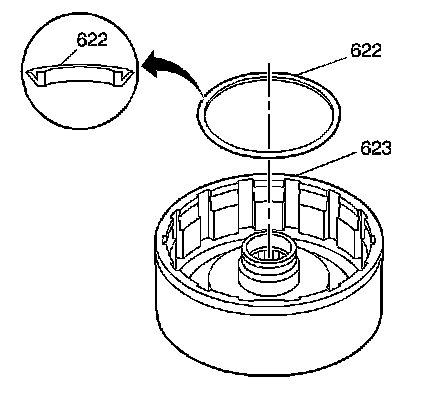
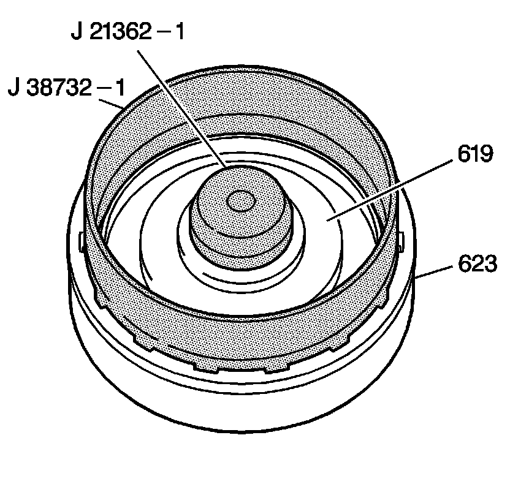
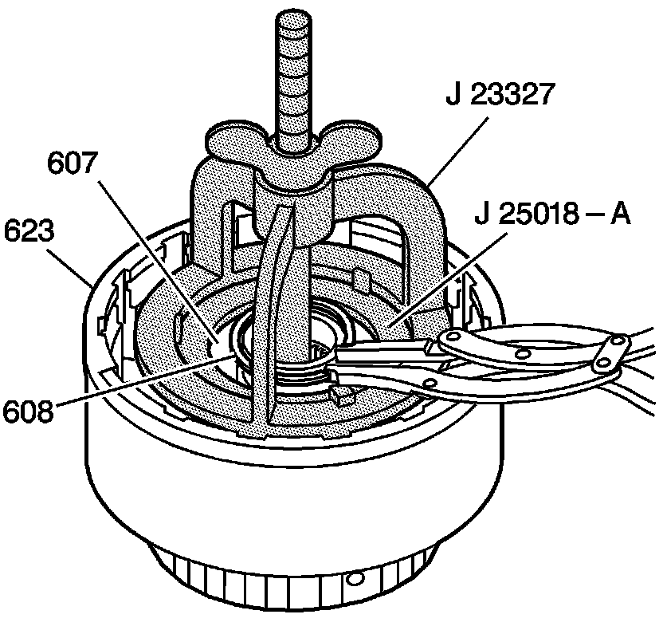
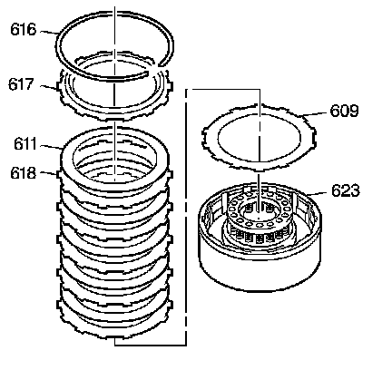
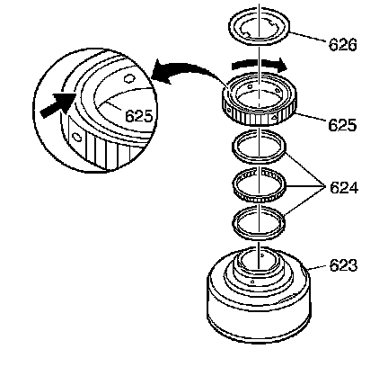
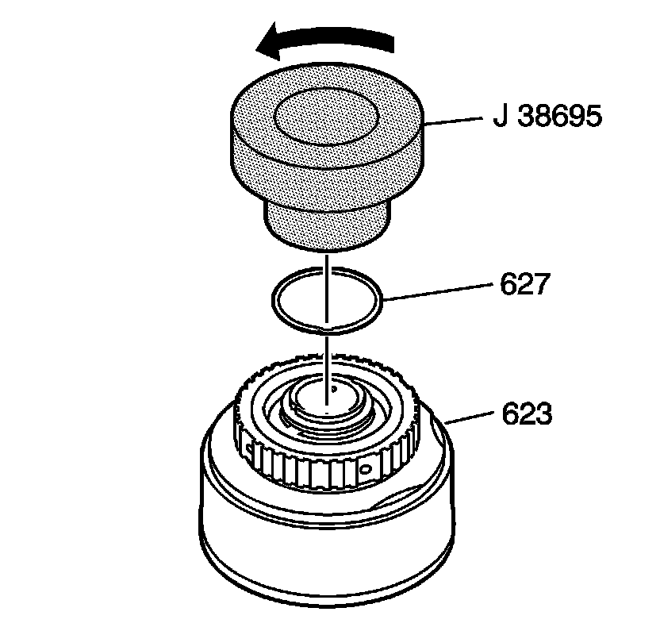

Direct Clutch Assembly Assemble
Direct Clutch Assembly Assemble
Tools Required
^ J 21362-1 Direct and Forward Clutch Piston and Inner Seal Protector
^ J 23327 Clutch Spring Compressor
^ J 25018-A Clutch Spring Compressor Adapter
^ J 38695 Direct Clutch Spiral Retaining Ring Installer
^ J 38732-1 Direct and Forward Clutch Piston and Seal Outer Protector

1. Install the direct clutch piston intermediate seal (622) onto the direct clutch housing assembly (623) with the seal lip facing upward.

2. Lubricate the direct clutch piston assembly (619) with DEXRON(R)VI transmission fluid.
3. Install the J 21362-1 and the J 38732-1 onto the direct clutch housing assembly (623). Lubricate the tools with DEXRON(R)VI transmission fluid.
4. Install the direct clutch piston assembly (619) into the direct clutch housing assembly (623) using a rotating motion until the direct clutch piston assembly (619) is seated.

5. Install the direct clutch spring assembly (607).
6. Install the J 23327 and the J 25018-A onto the direct clutch housing assembly (623).
7. Compress the direct clutch spring assembly (607).
8. Install the direct clutch spring retainer ring (608).
9. Remove the tools.

10. Dip all of the direct clutch plates in DEXRON(R)VI transmission fluid.
11. Install the direct clutch (waved) plate (609).
Important: Alternate the clutch plates, starting with the steel clutch plate (5 steel, 5 composite).
12. Install the direct clutch plates (611, 618).
13. Install the direct clutch backing plate (617).
14. Install the direct clutch backing plate retaining ring (616).

15. Turn the direct clutch housing assembly (623) over.
Important: When installing the intermediate clutch sprag assembly (624), the lip of the cage must face the direct clutch housing assembly (623).
16. Assemble the intermediate clutch sprag assembly (624) into the intermediate clutch roller outer race (625).
17. Install the intermediate clutch roller outer race (625) with the grooved side facing up:
^ Use a clockwise rotating motion to ease assembly
^ The clutch roller outer race (625) should not rotate counterclockwise
18. Install the intermediate clutch roller retainer (626).

Important: If the intermediate sprag clutch retainer retaining ring (627) has been removed, you must use a new ring.
19. Install the intermediate clutch roller retainer retaining ring (627) onto the hub of the direct clutch housing assembly (623).
20. Use the J 38695 in order to complete the installation of the intermediate clutch roller retainer retaining ring (627). Rotate the J 38695 counterclockwise while pressing down.